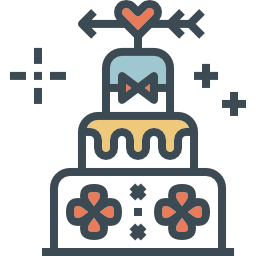

we're getting married!
Locations
Ceremonia

Kościół Św. Mikołaja
W Dźwiersznie Małym
Fotograf

Foto-Aparatka
Więcbork
Przyjęcie weselne
Dom weselny "Malwa"
w Luchowie
Program
"Amor Vincit Omnia. Miłość wszystko zwycięża"
- 11:00 - Fotografia ślubna
- 15:00 - Uroczystość zaślubin
- 16:30 - Toast ślublny
- 17:00 - uroczystość weselna
- ... - 4:00 - Tańce i zabawa
Prezenty
Najlepszy prezent jaki możesz nam zrobić, to Twoja obecność

Prosimy przyjedź, weź ze sobą dobry humor i baw się z nami
Pytania & odpowiedzi
Podróż i zakwaterowanie
Czy będzie jakiś zorganizowany transfer?
Nie, spotkamy się w kościele o 13:15.
Gdzie mogę zaparkować?
Parking jest bezpłatny w weekendy w 1. dzielnicy. Lokalizacje są blisko siebie, więc nie potrzebujesz swojego samochodu.
Jak mogę wrócić do domu w nocy?
Autobus 916 jest przez całą noc obsługiwany przez zamek i trafia do każdego głównego węzła komunikacyjnego w mieście.
Jedzenie
Chciałbym zrobić dla was jakąś niespodziankę na przyjęciu. Do kogo mam o tym mówić?
Porozmawiaj o tym z Abigail Smith. Po prostu prześlij jej e-mail na adres abigail@awesomemail.com .
Co powinienem założyć? Czy masz dress code?
Noś, co ci odpowiada. Jeśli pomaga to smart casual / business casual dla pań i smart casual / nieformalne dla panów są idealne opcje.
Chciałbym specjalnego jedzenia (bezglutenowe, bez laktozy, wegańskie itp.)
Napisz nam tutaj linię , a znajdziemy sposób.
Inne drobne pytania
Mam problem / pytanie w dniu ślubu. Z kim mogę mówić?
Jared Wright w sprawie tego numeru: +36 30 000 0000 .
Czy możemy zabrać dzieci?
Pewnie! Zaplanowaliśmy dla nich cały kącik zabawek / słodyczy.
Co myślisz o psach? Czy mogę przynieść moje?
Kochamy psy i możesz całkowicie przynieść swoje. The Heaven Lounge to miejsce przyjazne psom.
Contact
If you have any questions feel free to call / write us.
Phone: +36 30 000 0000 (Zoe) / +36 30 000 0000 (Alex)
Email: zoeandalex@awesomemail.com